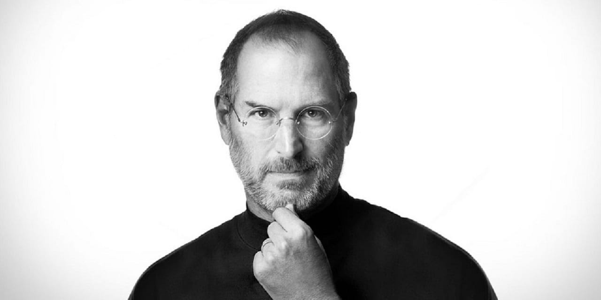

The people who are crazy enough to think they can change the world are the ones who do.
TIMELINE
Febuary 24, 1995 Steve Paul Jobs is born in San Francisco to Joanne Carole Schieble and Abdulfattah Jandali. The then-unmarried couple give up their son for adoption. Paul and Clara Jobs become Job's non-biological parents.
1961 The Jobs family moves to Mountain View, California, part of what would later become known as Silicon Valley.
August 9, 2011 Apple shares edge past those of Exxon Mobil to become the most valuable U.S. company, in terms of market capitalization, at $337.17 billion.
August 24, 2011 Resigns from Apple CEO post; becomes chairman.